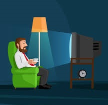
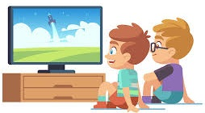

The Television : Advantages and Disadvantages
There's a television in almost every house and many people think that it is a necessary thing that must be in a house for entertainment in leisure time. Watching the television has advantages, but it also has disadvantages and we are going to discuss some of the advantages and disadvantages of watching the television in the following paragraphs.
Watching television is fun and entertaining and you can rest on a couch while watching the television after a long and hard work day. You can spend some of your leisure time watching television to make you entertained and happy. One of the television's advantages is that it can fill your leisure time with joy and happiness. To summarize, watching television has the advantage of amusing you and making you delighted.

Watching the television is also a way to learn and gain knowledge, you can learn the thing while you watch it. The television is full of channels and many of those channels are mainly made for informational and scientific content through which you could get knowledge and those channels include National Geographic Abu Dhabi and Animal Planet. To conclude, the television has so many channels and you can gain information and wisdom from some of those channels.
Sitting with your family or friends together in the same room and watching the television can increase your bonds with your family and friends. The television is not only for watching and entertainment, the television can bring you and your family or friends together and increase your love to each other. You could spend more time with each other and have fun watching the television together. In conclusion, watching the television with your relatives or friends on the same couch increases your bonds with each other and strengthens you relationship.
Like everything else, watching the television also has disadvantages and one of which is that watching the television can harm your health and body. Sitting too close to the television's screen for a long time can harm your eyes and can cause series injury that you might have to wear glasses forever. Furthermore, spending too much time sitting on the couch and not moving nor doing any exercise can cause obesity, overweight and health problems. In summary, sitting on the television for many hours can cause series problems such as eye problems and health problems and diseases such as overweight and diabetes.

Time management is a very important topic and everyone has to learn the skill of time management. Watching the television can waste your time and some people, and especially students, watch the television continuously for hours and then they do not find time for studying or for working. To conclude, watching television for long times can waste your time and you will not be able to finish your important work or your studying.
Some people sit at home alone and watch the television for a long time and they do not see anyone or talk to anyone and this could be a reason for that person becoming anti-social and behaving in an anti-social manner. This does not only harm his physical health but it also harms his mental health and make him mentally ill and tired. To summarize, watching the television for long time and not talking or communicating with any one causes mental problems and makes people depressed and anxious.
Finally, the last reason that make the television harmful is that it sometimes can contain inappropriate visuals and films for children and especially teenagers and it can also teach children and teenagers many bad habits and bad things including smoking and drifting and also televisions can contain murder scenes and fighting visuals especially in action films and movies and this can be really bad and can teach the children of this generation bad things and can lead to them being bad and aggressive. To sum up, the television can have some bad things and habits that the audience can learn and do which is a very bad disadvantage of televisions. Those bad habits include smoking, drifting, aggression, etc.
To sum up, watching the television have advantages and disadvantages, like everything in the world, but unfortunately its disadvantages exceed its advantages which make it a very harmful thing. Some of the television's advantages include that it keeps you entertained and makes you happy and helps you to relax after a long day of work, it helps in increasing your knowledge and helps you in gaining knowledge and it also increases your bonds and relationships with your friends and family. Some of its disadvantages include that it can cause eye problems and physical health problems, such as obesity and overweight, as well as mental problems, such as depression and anxiety, and it can also waste a lot of your time. Another disadvantage of television is that it can sometimes have bad visuals that teach people bad habits and bad things. In conclusion, the television can be a harmful and bad thing if you use it excessively and without care and permission from parents and if you watch it and sit in front of the televisions screen for long times as it can harm your eyes and cause mental problems as well.
This was a short article that explains and differs between the advantages and the disadvantages of the television and shows how the television can benefit you if you use it wisely and how it can also be harmful if you use it inappropriately and for long periods of time. This new technology needs the attention of parents and their supervision on their children so that they ensure their children have good health and not face or learn any bad things and habits and this ensures that our children are good and keep a good well-being.